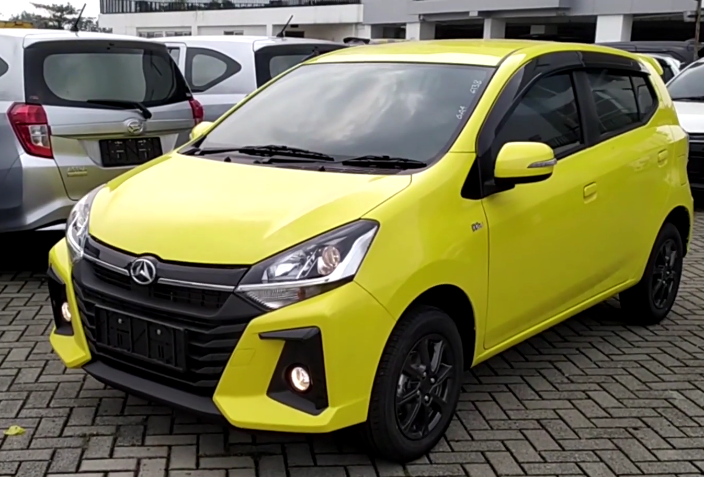

About
Daihatsu Ayla merupakan mobil yang diproduksi oleh Daihatsu. Daihatsu memproduksi mobil ini yang kemudian dijual pada 9 September 2013 karena sudah melewati tes LCGC (Low Cost Green Car) dari pemerintah. Mobil ini ditampilkan pertama kali di Indonesia International Motor Show 2012. Produksi mobil ini dimulai pada tanggal 26 Agustus 2013 di pabrik Daihatsu Karawang. Nama "Ayla" diambil dari kata Sanskerta yang berarti "cahaya"
Daihatsu Ayla tipe X tahun 2020 adalah mobil facelift ke-2 dari Daihatsu Ayla. Daihatsu Ayla tipe X memiliki dua pilihan mesin yaitu 1000cc dan 1200cc. Untuk ayla 1200cc sudah terdapat AC digital.
Berikut ini merupakan perbedaan Daihatsu Ayla tipe X tahun 2020 dengan mesin 1000cc and 1200cc
| Perbedaan | Ayla 1000cc | Ayla 12000cc |
|---|---|---|
| Mesin | 1000cc | 1200cc |
| harga |
|
|
| Tampilan | |
 |
| Airbag | Tidak Ada | Ada |